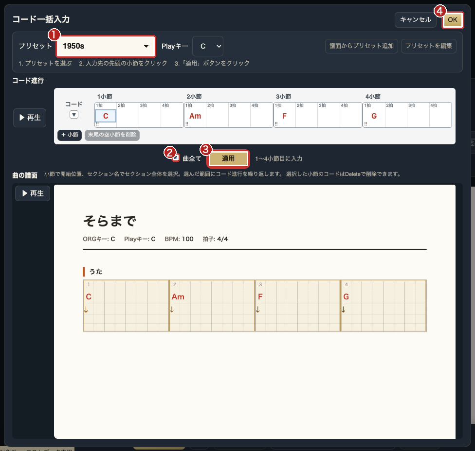
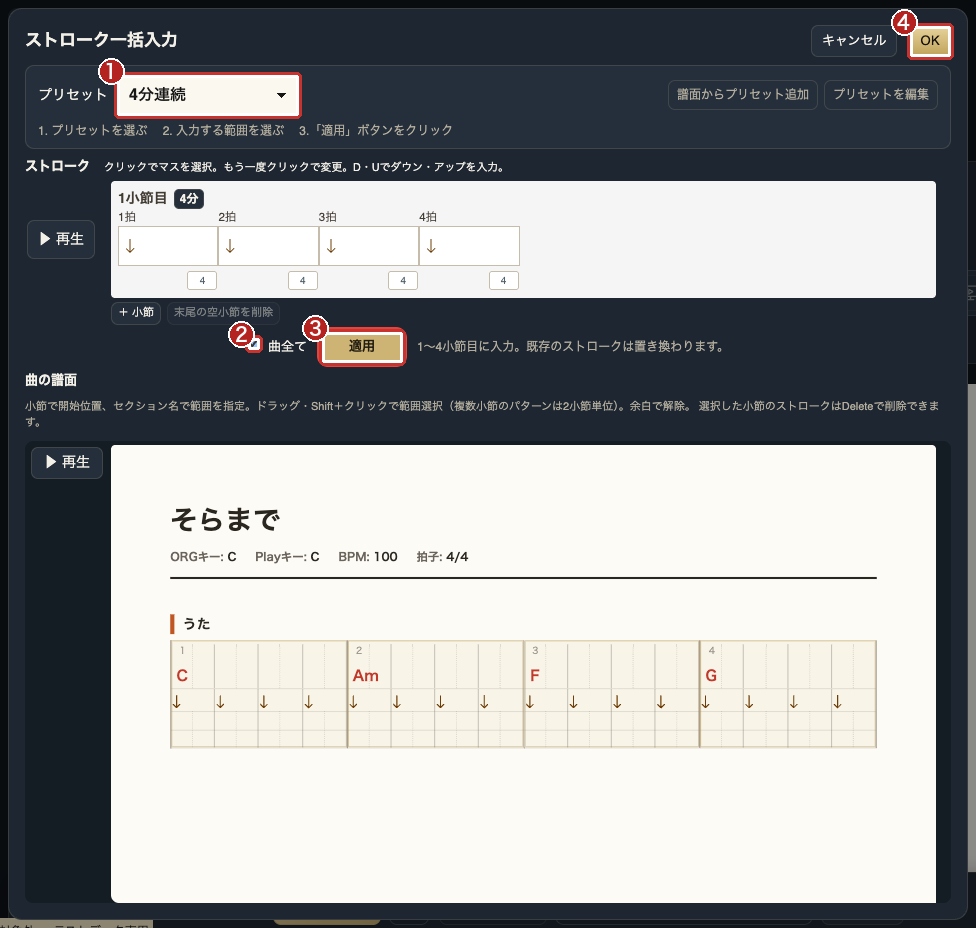
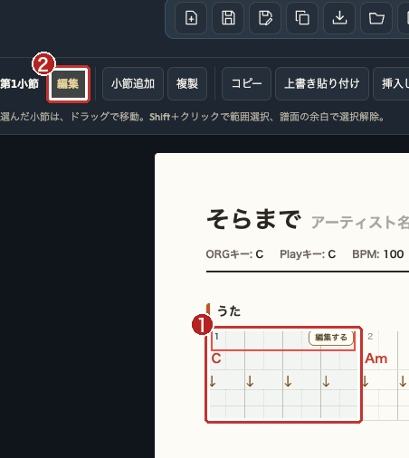
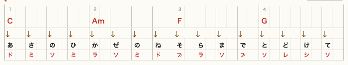
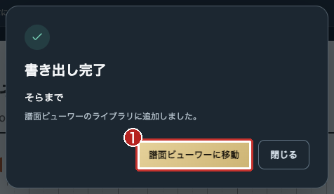
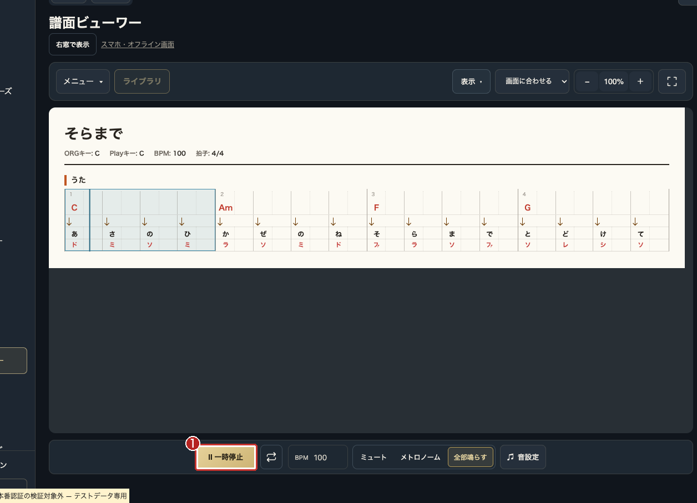

はじめての1曲「そらまで」
4/4拍子、BPM 100の4小節を作ります。コードとストロークは一括入力し、歌詞とメロディは各拍の先頭に入れます。
約1分9秒の操作動画です。字幕で操作を追えます。最後にビューワーで完成した曲の演奏が流れます。
1. 曲を作る
メニュー → 新しい曲を作成。曲名を「そらまで」、BPMを100、拍子を4/4にして「適用」を押します。
 ①メニュー ②新しい曲を作成
①メニュー ②新しい曲を作成 ①曲名 ②BPM ③適用
①曲名 ②BPM ③適用
2. 練習用の4小節を用意する
メニュー → セクション編集。この練習用の新規曲では、イントロの4小節を残し、ほかのセクションを選んで削除します。残したセクションの名前を「うた」に変え、「適用」を押します。
 ①削除するセクション ②セクションを削除 ③適用
①削除するセクション ②セクションを削除 ③適用
3. コードを一括入力する
メニュー → コード一括。「1950s」を選び、「曲全て」にチェックして「適用」を押します。下の譜面に C・Am・F・G が1小節ずつ並んだら、右上の「OK」で確定します。

①1950s ②曲全て ③適用 ④OK
4. ストロークを4小節すべてに入れる
メニュー → ストローク一括。「4分連続」を選び、ここでも「曲全て」をチェックして「適用」。3・4小節目まで各小節に4つずつ ↓ があることを確認し、「OK」を押します。

①4分連続 ②曲全て ③適用 ④OK
5. 小節編集を開く
譜面の1小節目をクリックし、上部カードの「編集」を押します。編集画面の上で「4小節」を選ぶと、4小節分を横に並べて入力できます。

①1小節目 ②編集
6. 歌詞を入れる
歌詞行の各拍の先頭に、ひらがなを1文字ずつ入力します。1小節目なら、1拍目「あ」、2拍目「さ」、3拍目「の」、4拍目「ひ」です。8分グリッドでは各拍の左側のマスを使います。
各列が1拍です。上段が歌詞、下段がドレミです。| 小節・コード | 1拍目 | 2拍目 | 3拍目 | 4拍目 |
|---|
| 1・C | あ
ド | さ
ミ | の
ソ | ひ
ミ |
|---|
| 2・Am | か
ラ | ぜ
ソ | の
ミ | ね
ド |
|---|
| 3・F | そ
ファ | ら
ラ | ま
ソ | で
ファ |
|---|
| 4・G | と
ソ | ど
レ | け
シ | て
ソ |
|---|
 ①4小節表示 ②最初の「あ」 ③最後の「て」
①4小節表示 ②最初の「あ」 ③最後の「て」
7. メロディを入れる
ドレミ行で、歌詞と同じ位置に音名を入力します。「ファ」は1つのマスにまとめます。4小節分を入力したら編集画面を閉じ、歌詞の真下に各音が並んでいることを確認します。
 ①4小節表示 ②最初の「ド」 ③最後の「ソ」
①4小節表示 ②最初の「ド」 ③最後の「ソ」
4小節すべてにコードと4本の矢印があり、その下に歌詞とメロディが並びます。
8. 編集用のファイルを保存する
メニュー → 名前をつけて保存。PCのChromeでは保存先と名前を選びます。図のようなダウンロード画面では「そらまで.json」を確認して「保存」。このファイルは「ファイルを開く(JSON)」で再編集できます。
 ①ファイル名 ②保存
①ファイル名 ②保存Safariで端末内の保存先を選ぶ方法
9. ビューワーに書き出して再生する
メニュー → 譜面ビューワーに書き出す。保存先のフォルダを確認して「書き出す」を押します。完了画面の「ビューワーで開く」を押し、下の「再生」で演奏を聴きます。同じボタンで一時停止できます。
 ①保存先フォルダ ②書き出す
①保存先フォルダ ②書き出す
①ビューワーで開く
①再生・一時停止
曲を作る・開く
- スタジオで「譜面クルーズ」を開き、「メニュー」から「新しい曲を作成」を選びます。
- 曲情報で曲名、BPM、拍子などを入力して「適用」を押します。
- 白い譜面の小節を選んで「編集」を押します。まず先頭にコードとストロークを入れ、下の「再生」で確認してから「保存」します。
- 1曲の切り替え・保存場所・ファイル一覧
- 2曲の作成や書き出し
- 3現在の曲を保存
- 4ツールの表示項目を選択
左上の曲名欄には、新規作成、保存、複製、ファイルを開く(JSON)、書き出し、印刷も並びます。「メニュー」からも同じ操作ができます。外部ファイルは「メニュー」→「ファイルを開く(JSON)」で開きます。ツールの各アイコンにポインターを置くと操作名が出ます。「…」で表示項目を選び、アイコンのドラッグで順番を変更できます。「すべて表示」で全項目を戻せます。
保存場所・複製・変更履歴
- 保存／名前をつけて保存
- ファイル保存に対応したPCブラウザでは、初回の「保存」で場所と名前を選びます。次の「保存」は関連付けたファイルを更新します。「メニュー」→「名前をつけて保存」で別名を選ぶと、それ以降の保存先は新しいファイルになります。
- 保存場所
- 曲名の選択欄を開き、「この曲の保存場所」を押すと、ファイルを関連付けたChromeではそのフォルダからファイル選択画面が開きます。場所を確認したらキャンセルで戻れます。未保存の曲やブラウザ内の曲では、現在の状態と書き出し方法が表示されます。
- Safariで端末内のフォルダに保存する
- 「保存」はこの端末のブラウザのサイトデータに曲を記録します。サイトデータを消す前や、別の端末に渡すときは「名前をつけて保存」で編集用JSONを書き出してください。ファイル名を入力して「保存」を押すとダウンロードが始まります。
- Mac Safari → 設定 → 一般 → ファイルのダウンロード先で、保存時に毎回確認する設定か、Mac内のフォルダを選びます。
- iPhone・iPad 設定 → アプリ → Safari → ダウンロードで「このiPhone内」または「このiPad内」を選ぶと、端末の「ダウンロード」に入ります。「iCloud Drive」を選ぶとiCloudが保存先になります。ファイルアプリで移動もできます。
再編集は曲名欄の「ファイルを開く(JSON)」から。編集を続けたあとは、更新版のJSONをもう一度書き出してください。
- 不要な曲を削除する
- 曲名の選択欄で「ファイル一覧・削除…」を選び、対象の曲の「削除」を押します。確認画面で曲名を確かめて確定します。続けて別の下書きも整理できます。削除するのはブラウザの曲とその下書きです。PCに書き出したJSONは手元に残ります。

- 曲を複製
- メニューから「曲を複製」を選び、別の曲として作業を続けます。編曲案を分けたいときに使います。
- 取り消し・履歴
- 保存ボタンの横の矢印で編集を一手ずつ取り消し・やり直しできます。「履歴」で過去の状態を選ぶと譜面を確認できます。「この時点に戻す」を確定すると、それ以降の履歴が失われます。ファイルへ反映するには保存します。
曲情報・キー・カポ
譜面のタイトル、BPM、拍子、ORGキー、Playキー、またはメニューの「曲情報」を押します。曲名・アーティスト・テンポ・拍子は見本で確かめてから「適用」します。
ORGキーは原曲の調、Playキーは演奏に使うキー・カポの組み合わせです。「移調・カポの変更前後を確認」またはメニューの「キー・カポ」を開き、コードの変更前後を見比べて適用します。「譜面の全体編集」からセクション編集と一括入力にも進めます。
小節を選ぶ・移動する
小節をクリックすると上部カードに小節操作が出ます。続けて同じ小節をクリックするか「編集」で入力へ進みます。複数小節は先頭から末尾へドラッグするか、最初をクリックして最後をShift＋クリックします。譜面の余白で選択を解除します。
- 小節追加・複製
- 選択位置の後ろに空の小節、または選んだ内容のコピーを追加します。
- コピー・貼り付け
- 元の範囲をコピーし、貼り始める位置を選びます。「上書き貼り付け」は既存の位置を置き換え、「挿入して貼り付け」は後ろの小節を送ります。
- 移動
- 前へ・後ろへ移動するボタンで並びを変えます。セクション境界では移動後の所属も確認します。
- 削除
- 「枠を残して削除」は譜面上の場所を空き枠として残します。「詰めて削除」は後ろの小節を前へ詰めます。空き枠は再生されません。
小節編集と鍵盤・フォーム入力

上の「1小節」〜「4小節」は編集する範囲、「前へ」「次へ」は小節移動です。倍率ボタンでマスを拡大できます。「右窓へ」で編集画面の置き場所を切り替えます。編集画面内の「？」で入力中にも操作を確認できます。
- コード・フォーム
- コード行のマスをクリックしてEmやG/Bなどを入力します。選択中のマスをもう一度クリックすると文字単位で直せます。行名の▼からコード・フォームを選べます。フォームの図は譜面の表示設定で表示できます。
- ストローク
- Dは↓、Uは↑、Xはミュート。マスの再クリックや上下キーでも切り替えられます。〜は直前の音を伸ばす指定です。RまたはSpaceは休符、Delete／Backspaceは空欄です。長い音価の記号も弾き始める位置を示します。
- 歌詞・ドレミ
- 歌い始めるマスに文字を入れます。ドレミは行名横の▼から鍵盤でも入力できます。音の高さを確認して試聴します。表示設定では歌詞・メロディの文字サイズと字間を個別に調節できます。
- 音価・拍ごとの固定
- 行名横の数字で行の入力単位を選びます。特定の拍だけ細かくしたい場合は拍の右下の数字を押します。鍵付きの拍は行の単位を変えても固定されます。「…」のマスは、単位を細かくすると中の入力を確認できます。
- マスのコピー・移動
- 同じ行をドラッグまたはShift＋クリックで選び、⌘／Ctrl＋C、貼り始めるマスで⌘／Ctrl＋V。伸ばしは先頭の音と一緒に選びます。入力済みマスの左下の点をドラッグすると移動先を上書きします。
セクションを組み立てる

- 1編集するセクションを選択
- 2選択したセクションを編集
- 3変更を適用
譜面の「イントロ」「Aメロ」などの見出しを押してセクション編集を開きます。対象を選び、名前・曲中の順序・小節数を調整します。繰り返す部分は「コピー」で持っていくパートを選び、挿入位置の「後ろに貼り付け」を使います。コピーに小節を足す・末尾を削る操作もできます。削除すると中の小節も対象になるため、プレビューで前後を確認して「適用」します。
コード・ストローク一括入力
コード進行を置く
「コード一括」でプリセットを選び、譜面上の開始小節を押します。選択色が付いた小節が入力先です。セクション名や範囲選択で同じ進行を繰り返す範囲を指定できます。再生で進行を確かめて「適用」します。選択範囲のコードをまとめて消す場合はDeleteを使います。
- 1コード進行を選択
- 2入力先の先頭小節を選択
- 3進行を適用
リズムを置く
「ストローク一括」で4分・8分・16分などのプリセットを選び、入力先を指定します。「曲全て」は全曲が対象です。プリセットの試聴と曲の譜面の再生を使い分け、適用前に範囲を確認します。
- 1ストロークパターンを選択
- 2入力先を選択
- 3パターンを適用
手持ちの進行やリズムは「譜面からプリセット追加」で元の範囲を選び、内容を整えて名前を付けます。「プリセットを編集」ではパターンを変更できます。ストロークは対応するリズムクルーズのプリセットJSONも読み込めます。再利用する素材は「プリセットに保存」してください。
段組み・文字・表示設定
上部の「表示」から項目の表示を切り替えます。「詳細設定」またはツールの「表示設定」で右側の見本を見ながら調整し、「保存」で確定します。「キャンセル」で開く前の状態に戻ります。
- 11行の小節数
- 2セクション別の表示
- 3表示設定を保存
- 1行の小節数
- 自動では譜面の幅に応じて1・2・4小節になります。手動では最大8小節を指定できます。譜面例で行を選ぶと、その行の枠数と置く小節数を個別に変えられます。
- セクションごとの変更
- 「セクション別の表示」で対象を選び、段組み、各行の表示、書体・色・サイズを調整します。未変更の項目は全体設定に従います。「全体に戻す」で個別指定を外します。譜面のセクション名の⚙はこの設定への近道です。
- 譜面の各要素
- チェックで表示、Aaで書体、色見本で色、スライダーで文字やフォームの大きさを指定します。歌詞・ドレミの字間、縦の罫線、ハイライトの透過率や再生棒の色も見本で確認できます。よく使う組み合わせは表示プリセットとして保存します。
- ズーム・全画面
- −／＋、トラックパッドのピンチ、Ctrl／⌘＋ホイールで読みやすい倍率にします。倍率表示を押すと標準に戻ります。全画面でも表示設定に進めます。
再生と練習

下の「再生」で始め、再生中のボタンで止めます。演奏中は小節がハイライトされ、棒が拍の位置を示します。セクション横の「ここから」でその位置から再生できます。複数小節を選ぶと選んだ範囲を練習できます。繰り返しボタンで反復を切り替えます。
下のBPMは練習用です。曲自体のテンポを変更する場合は「曲情報」を開きます。「ミュート」「メトロノーム」「全部鳴らす」で出力を切り替え、「音設定」でパート音量やカウントインを調整します。小節編集中は上部の再生で編集中の範囲を試聴できます。
書き出し・印刷・ビューワー
- 後から編集する
- メニューのJSON書き出しで編集用のファイルを保管します。再び編集するときは譜面クルーズの「ファイルを開く(JSON)」を選びます。
- 演奏用に渡す
- 「譜面ビューワーに書き出す」で名前とフォルダを指定し、ビューワーのライブラリに追加します。完了画面からビューワーで開くか、クルーズポートの譜面ビューワーでファイルを開き、再生・停止します。表示設定も引き継がれます。
- 紙・PDF
- 紙面の段組み、フォーム、歌詞などを表示設定で整え、「印刷」でプリンターや用紙を選びます。PDFで共有する場合は「PDFとして保存」を使います。配布前にページの区切りと文字の読みやすさを確認してください。
キー操作・困ったとき
- 隣のマスに進む
- Enter／Tabで次へ、Shift＋Tabで前へ。左右キーはマスの移動、文字編集中はカーソル移動です。行の移動は上下キー、ストローク行ではShift＋上下キーです。
- 保存・取り消し
- ⌘／Ctrl＋Sで保存、⌘／Ctrl＋Zで取り消し、Shiftを加えてやり直し。日本語入力中は変換を確定します。
- Spaceで休符になった
- ストローク入力中はSpaceが休符です。試聴には編集画面の再生ボタンを使います。
- 操作ボタンが見当たらない
- 小節操作は小節を選ぶと表示されます。ツールを以前減らした場合は「…」→「すべて表示」で復元できます。画面幅が狭いときはツール列を横にスクロールします。
- 同じ曲でも一部だけ表示が違う
- セクション名の⚙から個別設定を確認します。段組みだけが違う場合は詳細設定の見本でその行を選び、行の個別指定も確認します。